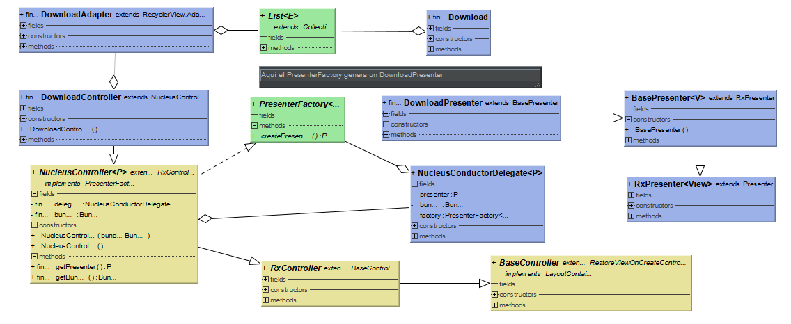

Arquitectura
El app de Tachiyomi maneja diferentes patrones de diseño con el fin de realizar un correcto manejo de interfaz gráfica, teniendo en cuenta la realización de tareas en segundo plano (como la descarga de comics), de controlar el uso asincrónico de entidades relacionadas con tareas de alto impacto (como manejadores de bases de datos, de descargas de contenido o de manejo de caché) y, por sobre todo, mantener un bajo acoplamiento. Para dar una mirada más profunda de los patrones de diseño utilizados se listarán a continuación
Inyección de dependencias
El patrón de inyección de dependencias consiste en separar el proceso de creación de los objetos de los objetos mismos. En cierta medida, este patrón está basado, al menos en este caso, en el uso del patrón Factory Method, que será explicado a posteriori. Esto debido a que, mediante el patrón Factory Method, el proceso de creación de cada uno de los componentes esenciales de Tachiyomi se ve reducido al uso de una clase específica para dicho fin. Ahora bien, de una manera concreta, Tachiyomi hace uso de la librería Injekt con el fin de hacer la inyección de dependencias. En el siguiente fragmento de código (correspondiente a la clase AppModule [tachiyomi-0.8.4/app/src/main/java/eu/kanade/tachiyomi/AppModule.kt]) se puede ver el uso de la librería Injekt y el uso del método fundamental registerInjectables() que será explicado a continuación.
*Código* dasdasd a sd asdasd asdasdasdasd asdasdasdkasdhas kasdhaks djhaskdjahskdjahskdjh kajsdhaksjdhaskjdhaskjdhask jalsdkjaslkd
Mediante el método registerInjectables() se introducen todas las dependencias a usar y sus respectivas factories (de ser necesario). De esta forma, se utiliza Injekt en vez del objeto mismo para verificar que el patrón asociado al mismo (como el patrón Singleton en el caso del DatabaseHelper) se cumpla a cabalidad. Un ejemplo del uso de Injekt se encuentra en el uso del metodo get<ExtensionManager>(). En este ejemplo, dado que se definió que se utilizaría un singletonFactory en esta clase, cada vez que se invoque dicho metodo get<ExtensionManager>() se obtendrá la misma instancia de ExtensionManager en caso de que ya haya sido previamente creada.
Observer (Let's talk about ReactiveX a.k.a Rx)
Dentro del método registerInjectables() hay una porción de código que maneja la instanciación asincrónica de elementos que se encargan de las tareas de mayor impacto. Puesto que la instanciación, por medio de la Factory correspondiente, puede tomar de igual manera un tiempo considerable, esta misma se realiza de manera asincrónica para que luego le sea asignado un Scheduler encargado de realizar tareas computacionales. En resumen, una vez ejecutado el método get<"Clase">() (v.gr.get<PreferencesHelper>()) se verifica si la instancia ya está creada o no (en el caso de que la Clase siga el patrón Singleton) y una vez terminada la instanciación (ejecutada de manera asíncrona), se asigna una instanciación de Scheduler con fines computacionales (creada mediante Scheduler.computation()). Para finalizar, dicha asignación de un Scheduler se realiza mediante el uso del patrón Observer. Se utiliza la clase Observable de ReactiveX que está pendiente de la finalización de la instanciación de la Clase, para la creación del Scheduler mencionado. El siguiente fragmento de código muestra el funcionamiento descrito. De igual forma, muestra el esquema para la ejecución de tareas asíncronas, que en el futuro serán realizadas mediante multithreading con ayuda de los Schedulers generados.
*Código*
Singleton
Como se mencionó anteriormente, el patrón Singleton es un patrón que restringe la instanciación de una clase a un solo objeto. En el caso de Tachiyomi, es usado en manejadores de red (para las conexiones a las extensiones disponibles dentro de la aplicación), manejadores de caché y de bases de datos. Junto con el patrón de inyección de dependencias hace un arreglo muy poderoso de patrones, creando un código mantenible. De manera concreta, el uso del patrón Singleton se ve mediante el uso de Injekt.get<Clase>() (usada dentro de la clase DownloadCache [tachiyomi-0.8.4/app/src/main/java/eu/kanade/tachiyomi/data/download/DownloadCache.kt], línea 30). Si la clase ya está instanciada, se retorna dicha instanciación y si no lo está, se instancia.
Factory Method
Como se mencionó anteriormente la inyección de dependencias se basa en el uso del patrón factory method. En él, la instanciación de una clase depende de sus subclases asociadas y, de esa manera, en el caso de tachiyomi, hay una clase específica encargada de la creación de instancias (que, como se vió en la creación del módulo de Injekt en la clase AppModule, se comporta como un singleton). Esto beneficia el bajo acoplamiento y reduce el mal manejo de instancias, utilizando el número necesario de instancias para el manejo de tareas del alto impacto como consultas a una base de datos.
MVP (Let's talk about Nucleus)
¿Cómo manejar la actualización de la interfaz gráfica a partir de la realización de tareas que se realizan en segundo plano? De igual forma, ¿Cómo procurar que dichas tareas (y los cambios que generan estas tareas sobre la interfaz) se completen correctamente a pesar de un eventual cambio en el estado de la aplicación dado por una modificación en la configuración o un reinicio? La respuesta a esa pregunta en el caso de Tachiyomi es Nucleus, una librería que, mediante el patrón MVP, permite conectar elementos de la interfaz gráfica con la realización de tareas generalmente costosas (como la descarga de un cómic). Aquí, el presentador está al tanto de las tareas en segundo plano y de los cambios sobre la información que estas puedan generar. Adicionalmente, se tienen control de los fragmentos y actividades puestas sobre la vista y, ante un cambio en la configuración (como una rotación de pantalla o la caída de la conexión a internet), se reinician el fragmento en su último estado y se continúan con los procesos generados en segundo plano, cuando sea posible. De esta forma, Nucleus permite que Tachiyomi se vuelva robusta frente a los eventos de cambios en configuración o reinicios de actividades. Sin embargo, Nucleus ya no está en proceso de desarrollo y el uso de Redux propone una arquitectura mucho más escalable que cualquiera MVxx, por lo que el cambio a una arquitectura de ese estilo convendría en mejor escalabilidad y en la manutención de los beneficios propuestos por Nucleus.
En el siguiente código puede verse el funcionamiento de Nucleus a partir de un código base puesto sobre la clase BasePresenter de Tachiyomi. [tachiyomi-0.8.4/app/src/main/java/eu/kanade/tachiyomi/ui/base/presenter/BasePresenter.kt]
*Código*
En este pequeño ejemplo vemos como en el código base para los presentadores, los mismos están dispuestos a crear los Observables (clase perteneciente a Nucleus) necesarios para el funcionamiento asincrónico de tareas de tipo I/O, iniciadas dentro de este presentador a partir de una acción del usuario, que se ve representada por el lanzamiento de un método de Controlador de una clase específica. En el siguiente código se puede ver un fragmento de la clase CatalogueController [tachiyomi-0.8.4/app/src/main/java/eu/kanade/tachiyomi/ui/catalogue/CatalogueController.kt] (que no es más que un wrapper de la vista de catálogo de mangas disponibles con un acceso al presentador CataloguePresenter, que hereda de NucleusController, que a su vez hereda del anteriormente mostrado BasePresenter).
*Código*
Como se puede observar, el controlador de catalogos hace uso del presentador CataloguePresenter (creado en la línea 76 del archivo CatalogueController.kt y usado concretamente en la línea 116 del mismo) y del adapter CatalogueAdapter (instanciado en la línea 98) cuyo objetivo se explicará en el siguiente aparte. Un detalle a resaltar en el fragmento de código puesto es el uso de Injekt y de la manutención del patrón Singleton a la hora de utilizar la clase PreferencesHelper (línea 46) que se encarga de controlar las preferencias del usuario en cuanto a lenguaje y visualización de los mangas.
Adapter
Como es común encontrar en Android, Tachiyomi utiliza el patrón Adapter con el fin de construir un puente entre la información contenida en una lista, particularmente la lista de mangas locales o la lista de descargas desde las extensiones, y el RecyclerView encargado de mostrar dicha lista en la Vista.
De igual forma, el patrón Adapter puede ser visto en el uso de los interceptores de la librería OkHttp que hace las veces de modificador de una petición dentro de un cliente HTTP (aunque de manera mucho más precisa cumple con el patrón Facade al hacer una adaptación de una petición hecha desde el app a un servidor externo). Dentro de Tachiyomi, dicho Interceptor modifica petición a servidores de Cloudflare y, naturalmente, dicha clase se llama CloudflareInterceptor [tachiyomi-0.8.4/app/src/main/java/eu/kanade/tachiyomi/network/CloudflareInterceptor.kt]
De toda esta forma, cualquier clase que contenga participación sobre la vista sigue un patrón (que contiene un Presenter ya explicado, un Controller, un Adapter y un Modelo) que se ve de una forma similar a como se mostrará el siguiente diagrama de clases (hecho sobre el caso de las Descargas de cómics), que ejemplifica el patrón MVP ya descrito, ejercido con ayuda de Nucleus (en especial su Conductor) y ReactiveX.
